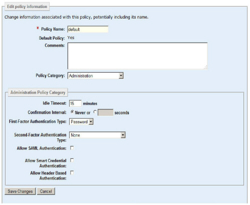

|
IdentityGuard Server 11.0 Administration Guide |
|
IdentityGuard Server 11.0 Administration Guide |
To control access to the Administration interface more securely, you can configure policies to require that administrators authenticate with a grid, token, soft token, or temporary PIN when they log in.
In addition, you can set policies that allow administrators to bypass additional authentication to the Administration interface if they have already authenticated to another Web application using a smart credential or SAML authentication. See Configuring SAML authentication to the Administration interface or Configuring smart credential authentication to the Administration interface.
Note: You cannot restrict authentication to the Administration interface based on token name. All valid tokens can be used, regardless of their name. For more on token names, see Token set overview (using multiple tokens).
To set policy requiring second-factor authentication
1. If you do not know what policy applies to the administrator’s group, first complete the following steps:
a. On the menu bar, click User Accounts and find the administrator’s account information to locate the administrator’s group name. (See Find an administrator account.)
b. On the menu bar, click Groups and view that group’s information to determine the group’s associated policy name. (See Find a group.)
2. On the menu bar, click Policies and locate the policy that applies to the group. (See Find a policy.)
3. Under Policy Category, select Administration.
The administrative policy options appear.

4. Click Edit Policy.
5. To configure login using second-factor authentication, from the Second-Factor Authentication Type list, select one of the following authentication types:
– Grid
– Token (Response-Only)
– Token (Challenge-Response)
– None
If you want the administrator to use a soft token, select Token (Response-Only).
6. Click Save Changes.
You must now set up the cards, tokens, or soft tokens for the administrative users.
To set up an authenticator
1. Access the administrator’s account information page. (See Find an administrator account.)
2. Scroll to the bottom of the Account Information pane and click the applicable link under Authentication Types.
Each link opens a different pane. Each pane has one or more buttons that perform actions or that open configuration pages for the target authentication type. For information about each of the many authentication types, see the applicable section in the guide:
● To create and assign a card, see Creating grid cards and Assign grid cards to users.
● To assign a token, see Assign tokens to users.
● To create and activate a soft token, see Soft token creation and activation overview.
● To create a temporary PIN, see Administering temporary PINs.
With the applicable permissions and group access, administrators can issue their own cards, tokens, soft tokens, and temporary PINs.